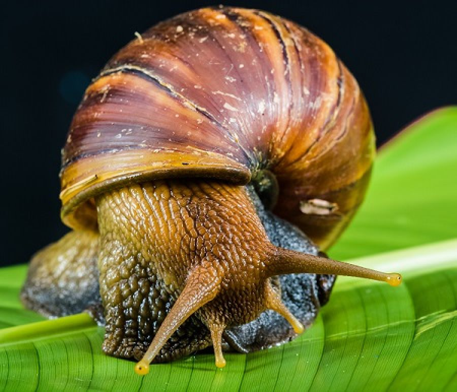

Curiosidades Interesantes
¡Bienvenido! Aquí encontrarás más datos curiosos 3!!.
Las mariposas tienen el sentido del gusto en sus patas.

Un caracol puede dormir durante tres años seguidos.
Los tiburones existían antes que los árboles.

Las cebras son negras con rayas blancas, no al revés.

Los koalas tienen huellas dactilares casi idénticas a las humanas.